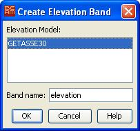

This command adds a new elevation band to the current product.
The altitudes are computed by looking up each pixel
in a selected high-resolution DEM (which is by default GETASSE30).

Elevation Model
Let's you select a elevation models which is registered in BEAM.
Band name
The name of the new created elevation band.